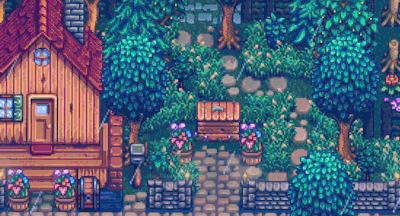

Добро пожаловать на ферму!

Stardew Valley - это уютная игра про фермерство, в которой ты ухаживаешь и развиваешь заброшенную ферму дедушки. Здесь можно сажать урожай, ловить рыбу и дружить с жителями города Пеликан!

Stardew Valley - это уютная игра про фермерство, в которой ты ухаживаешь и развиваешь заброшенную ферму дедушки. Здесь можно сажать урожай, ловить рыбу и дружить с жителями города Пеликан!